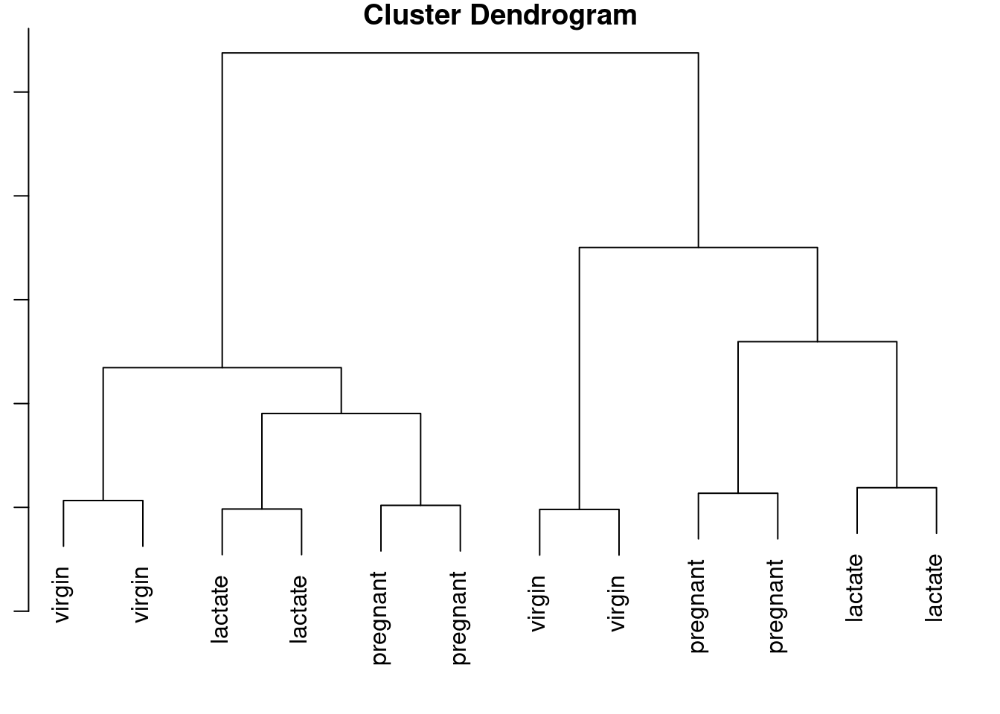
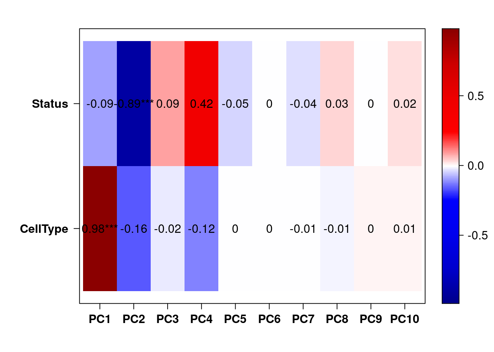
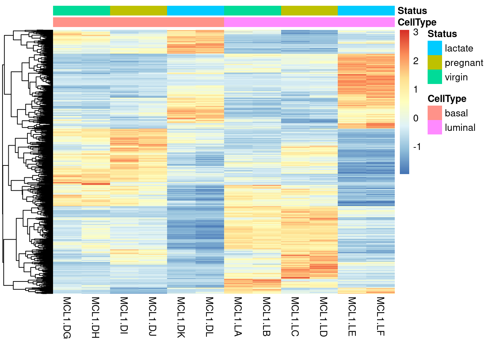
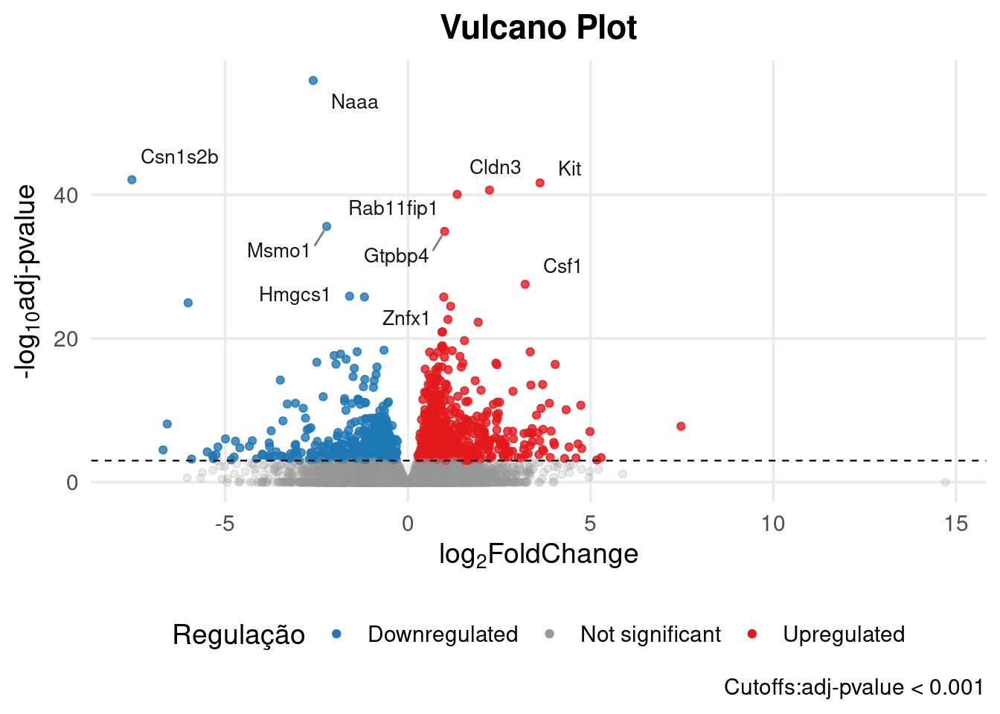
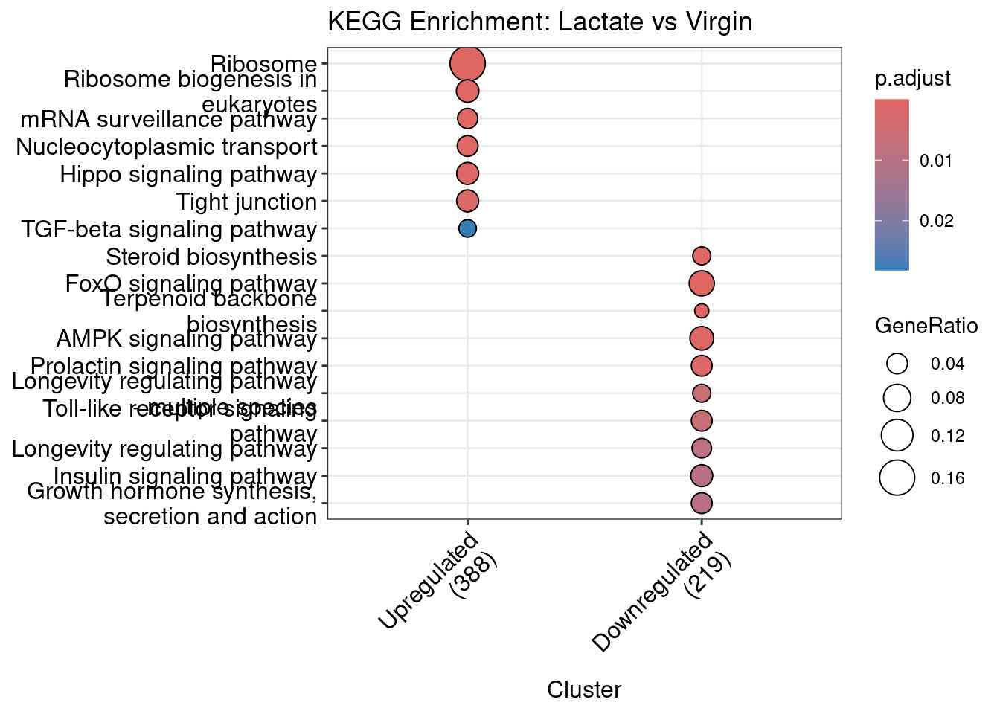
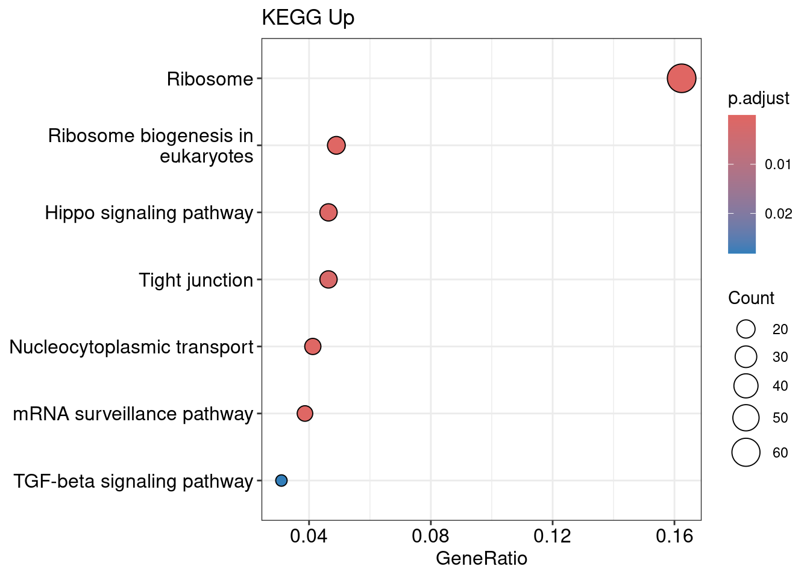
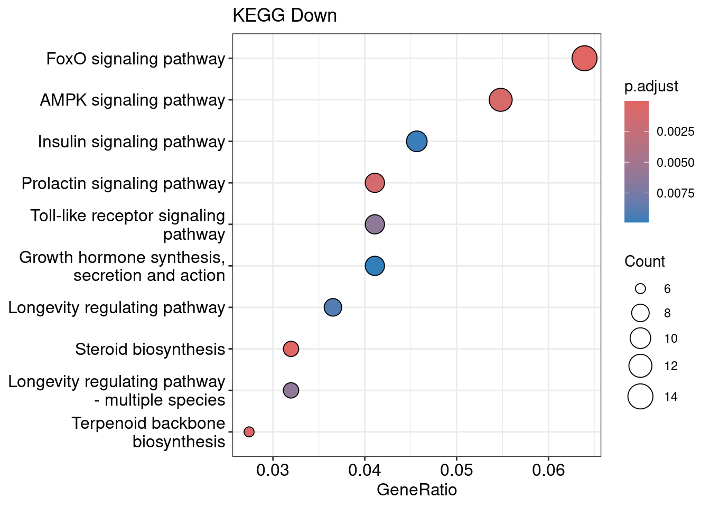
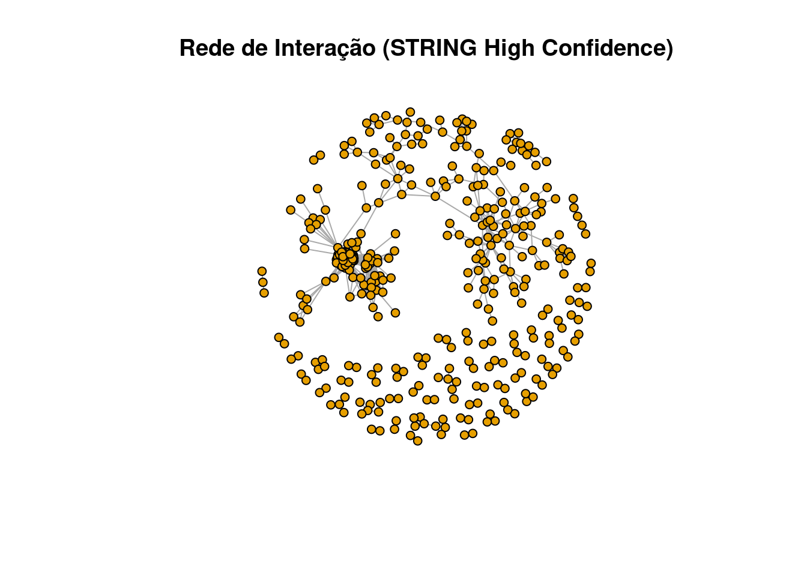

2 Parte 2: Prática
3 Importação dos dados
gene_count <- read.csv("data_pratica/GSE60450_Lactation-GenewiseCounts.txt")[,-1]
gene_count <- column_to_rownames(gene_count,"EntrezGeneID") |>
dplyr::select(-Length)
metadata <- read.csv("data_pratica/SampleInfo_Corrected.txt", sep = "\t")
rownames(metadata) <- metadata$SampleName4 Sanidade de dados
Antes de procedermos para a análise de expressão diferencial, é necessário realizar uma análise exploratória do conjunto de dados. Aqui, buscamos verificar a distribuição da expressão gênica nos grupos de comparações (no nosso caso, o tipo celular, se luminal ou basal). Para tal, precisamos de técnicas estatísticas robustas, as quais consigam considerar a multidimensionalidade dos dados de expressão. De uma forma simples, o caráter multidimensional dos dados de expressão é decorrente do fato de que lidamos com milhares de genes ao mesmo tempo e, portanto, precisamos “resumir” as informações destes genes. Por isso, técnicas de redução de dimensionalidade, como a análise de componentes principais (PCA) e técnicas de agrupamento, como a clusterização hierárquica, são importantes para entendermos a estrutura do nosso dado de expressão
dds <- DESeqDataSetFromMatrix(gene_count,
colData = metadata,
design = ~ CellType + Status)
dds_vst <- vst(dds)
dds <- DESeq(dds)A função DESeq congrega diferentes funções. Ela estima os fatores de escala de cada amostra, estima a dispersão por gene ou transcrito, aplica o modelo e testa a significância dos parâmetros.
4.1 Análise de Componentes Principais (PCA)
A Análise de Componentes Principais (PCA) é uma técnica para análise multivariada que visa sumarizar as informações provenientes de uma amostra em novas características, ou componentes principais. Assim, para nossos propósitos, a informação a ser captada é a variabilidade da expressão dos genes de uma amostra. Por meio desta técnica, podemos resumir uma amostra em um ponto do espaço com n dimensões.
A análise de componentes principais decompõe as informações dos genes em espaços de variabilidade. Quanto mais variabilidade há na expressão de um gene, mais este gene contribui para este espaço. Neste processo, definimos componentes que indicam em quais direções do espaço há maior variabilidade. A componente principal 1 (PC1) é direção onde há maior variabilidade, a componente principal 2 é direção onde há a segunda maior variabilidade, a componente principal 3 é direção onde há a terceira maior variabilidade, e assim por diante. Em geral, plotamos as componentes principais 1 e 2 e verificamos como as amostras se relacionam. O pacote PCAtools contém inúmeras funções customizadas para esta tarefa.
Antes de realizarmos análise, aplicaremos uma transformação dos dados de expressão. Esta transformação é necessária para reduzir a dependência da variância em relação à média, já que uma das principais características de dados de expressão gênica é a heteroscedasticidade. Ou seja, genes com expressão média pequena tem variância grande, enquanto que genes com expressão média alta possuem menor variância. Este passo de transformação dos dados não é necessário para os testes de expressão diferencial, como veremos adiante. Alguns algoritmos de transformação dos dados são o variance stabilizing transformation (VST) e o regularized logarithm (rlog), ambos implementados no DESeq2.
4.2 Clusterização hierárquica
# Transpor matriz de counts transformados
counts_genes_vst_t <- t(counts_genes_vst)
# Setar nomes dos grupos
rownames(counts_genes_vst_t) <- metadata$Status
# Clusterização hierárquica
d <- dist(as.matrix(counts_genes_vst_t), method = "euclidean")
clusters <- hclust(d, method = "complete")
# Plotar
par(mar = c(1, 1, 1, 1))
plot(clusters)
4.3 Análise de covariáveis
A análise de expressão diferencial nada mais é que um modelo de regressão, no qual a variável resposta é a expressão de cada um dos genes e a variável explanatória é o grupo de comparação (no nosso caso, os subtipos do tumor). Este modelo de expressão é aplicado a cada um dos genes para verificarmos se há diferença na expressão quando consideramos os diferentes níveis do grupo de comparação.
Entretanto, outras variáveis, além do grupo de comparação, podem ser importantes para explicar a expressão gênica. Como vimos na PCA, as características histológicas são um importante fator que influencia a expressão gênica. Além disso, o pesquisador pode julgar, com base em evidências prévias, que uma variável é relevante para o modelo. Estas variáveis adicionais podem ser acrescentadas ao modelo de expressão gênica a fim de melhorar a resolução dos resultados.
Uma forma de selecionar covariáveis é verificar quais se correlacionam significativamente com as componentes principais. A seguir, a função eigencorplot fornece uma maneira fácil de visualizarmos as correlações significativas.
No nosso caso não temos covariáveis, mas segue o script de exemplo:
eigencorplot(pca, metavars = c("CellType", "Status"))
As escolha de covariáveis para o modelo é um processo subjetivo. Entretanto, sugerimos selecionar as covariáveis que se correlacionam com as primeiras componentes. Portanto, pelo gráfico de correlações acima, podemos adicionar a covariável histology ao modelo de expressão de genes e transcritos.
5 Análise de expressão diferencial
Nesta etapa, realizaremos análise de expressão diferencial de genes (DGE).
As análises DGE é realizada com o pacote DESeq2. O DESeq2 implementa um modelo linear generalizado baseado na distribuição Binomial Negativa para a expressão de genes e transcritos. Esta metodologia é uma das mais utilizadas para análise de expressão diferencial, entretanto, outras metodologias podem ser utilizadas, como edgeR e o limma.
Na análise de expressão diferencial de genes (DGE), a expressão do gene é sumarizada na abundância coletiva dos transcritos anotados para aquele gene. Portanto, inferimos se aquele gene teve alteração ou não na sua expressão, dadas diferentes condições. No exemplo, temos um aumento significativo da expressão do gene A nas amostras do grupo tratado, mas não houve alteração do gene B.

6 Análise de expressão diferencial de genes (DGE)
Definindo de forma coloquial, um contraste é uma comparação entre os grupos de uma variável categórica. Para o nosso exemplo, queremos verificar a diferença na expressão das amostras de indivíduos lactentes e grávidas. Assim, nosso contraste de interesse é pregnant-lactate. A ordem com a qual o contraste é construído interfere na interpretação dos resultados. No caso descrito, a referência da nossa comparação é o grupo das amostras de lactantes.
O primeiro elemento é a variável de comparação, o segundo elemento é grupo correspondente ao caso (tratamento) e o terceiro elemento é o grupo correspondente à controle (referência):
res_dge <- DESeq2::results(dds, contrast = c("Status", "pregnant", "lactate"))
res_dge <- as.data.frame(res_dge)res_dge$symbol <- mapIds(
x = org.Mm.eg.db,
keys = rownames(res_dge),
column = "SYMBOL",
keytype = "ENTREZID",
multiVals = "first"
)
# res_dge <- res_dge %>%
# mutate(
# padj = ifelse(is.na(padj), 1, padj),
# signif =
# case_when(
# padj <= 0.001 & log2FoldChange < 0 ~ "Downregulated",
# padj <= 0.001 & log2FoldChange > 0 ~ "Upregulated",
# padj > 0.001 ~ "Not significant"
# )
# )
#
# # Filtrar os genes diferencialmente expressos (padj <= 0.05)
# res_dge <- subset(res_dge, padj <= 0.01)O dataframe res_dge contém os resultados da comparação de interesse. O dataframe contém as seguintes informações:
baseMean: média dos valores de contagens normalizados para todas as amostras;
log2FoldChange: métrica que indica o aumento ou diminuição da expressão gênica na comparação de interesse;
lfcSE: desvio padrão do log2FC;
pvalue: p-valor do teste;
padj: p-valor do teste ajustado.
Uma observação importante do resultado acima é que o DESeq2 coloca valores NA para genes valores de contagens baixos. Pode-se considerar que o p-valor para estes genes é 1 ou próximo de 1 e, por isso, estes não são significativos.
O fold change é uma medida que indica o quanto que um determinado gene (ou transcrito) teve sua expressão alterada em uma determinada comparação. Para entendermos esta medida, vamos considerar o seguinte exemplo:
res_dge[1:2,]7 Representações gráficas do resultado da expressão diferencial
Vamos plotar o resultado da expressão diferencial de genes em um heatmap. De forma análoga, podemos utilizar este gráfico para representarmos o resultados das outras análises de expressão. Iremos utilizar o pacote pheatmap, que possui uma interface simples para a criação do gráfico. A vantagem deste pacote é proporcionar a clusterização das amostras e dos genes de acordo com a expressão.
res_dge_h <- subset(res_dge, padj <= 0.001)
# Selecionar os genes DGE
dge <- rownames(res_dge_h)
# Obter tabela de expressão
exp_genes <- DESeq2::counts(dds, normalized = TRUE)
# Desta tabela, verificar quais genes são DGE
idx <- rownames(exp_genes) %in% dge
exp_dge <- exp_genes[idx,]
# Transformar valores de expressão em z-score
exp_dge_z_score <- t(apply(exp_dge, 1, scale, center = T, scale = T))
colnames(exp_dge_z_score) <- rownames(metadata)
# Criar coluna de anotação
ann_col <- as.data.frame(colData(dds)[, c("CellType", "Status")])
# Plotar gráfico
pheatmap(exp_dge_z_score, show_rownames = F, annotation_col = ann_col, cluster_cols = F)
# meta_lum <- subset(metadata, CellType == "luminal")
# count_lum <- select(gene_count, meta_lum$SampleName)# dds <- DESeqDataSetFromMatrix(count_lum,
# colData = meta_lum,
# design = ~ CellType )
#
# dds_vst <- vst(dds)
# dds <- DESeq(dds)# counts_genes_vst <- assay(dds_vst)
# pca <- pca(counts_genes_vst, metadata = meta_lum)
# biplot(pca, colby = "CellType", shape = "Status", legendPosition = "left")# res_dge <- DESeq2::results(dds, contrast = c("Status", "lactate", "virgin"))
# res_dge <- as.data.frame(res_dge)Podemos visualizar este resultado a partir de um volcano plot. O volcano plot é um gráfico que relaciona o p-valor com o log2 Fold Change. Com este gráfico, é fácil ter uma ideia geral sobre a quantidade de genes downregulados e upregulados na nossa análise.
padj_cutoff <- 0.001
genes_to_label <- res_dge[res_dge$signif != "Not significant", ]
genes_to_label <- head(genes_to_label[order(genes_to_label$padj), ], 10)
ggplot(res_dge, aes(x = log2FoldChange, y = -log10(padj), color = signif)) +
geom_point(aes(alpha = signif), size = 1.5) +
scale_color_manual(
values = c("Downregulated" = "#1F78B4",
"Not significant" = "grey60",
"Upregulated" = "#E31A1C"),
name = "Regulação"
) +
scale_alpha_manual(
values = c("Downregulated" = 0.8,
"Not significant" = 0.2,
"Upregulated" = 0.8),
guide = "none"
) +
geom_hline(yintercept = -log10(padj_cutoff),
linetype = "dashed", color = "black", linewidth = 0.4) +
geom_text_repel(
data = genes_to_label,
aes(label = symbol),
size = 3.5,
box.padding = 0.5,
point.padding = 0.5,
max.overlaps = Inf,
segment.color = 'grey50',
color = "gray9"
) +
labs(
title = "Vulcano Plot",
x = expression(paste(log[2], "FoldChange")),
y = expression(paste("-", log[10], "adj-pvalue")),
caption = paste0("Cutoffs:", "adj-pvalue < ", padj_cutoff)
) +
# Tema de Artigo
theme_minimal(base_size = 14) +
theme(
plot.title = element_text(hjust = 0.5, face = "bold"),
legend.position = "bottom",
panel.grid.minor = element_blank(),
panel.background = element_rect(fill = "white", color = NA),
plot.background = element_rect(fill = "white", color = NA)
)
res_dge <- subset(res_dge, padj <= 0.001)8 Análise de enriquecimento funcional
A análise de enriquecimento funcional tem como finalidade ajudar o pesquisador a identificar vias biológicas chaves as quais podem estar alteradas na condição de interesse. Tomando como base a nossa lista de genes diferencialmente expressos nas amostras tumorais, a análise de enriquecimento irá verificar se há um número muito maior de genes alterados em uma determinada via biológica do que seria esperado ao acaso.
Com isso, é necessário tomar por base algum banco de dados que contenha informações sobre vias biológicas, como o KEGG Pathways e o Gene Ontology.
Para a análise de enriquecimento, iremos utilizar o pacote clusterProfiler.
Neste exemplo, faremos o enriquecimento funcional com base no KEGG Pathways. Utlizaremos a função enrichKEGG(). Esta função requer como entrada uma lista de ENTREZ ids e o identificador do organismo no KEGG. Escolheremos as vias significativas aquelas com qvalor < 0,05.
library(clusterProfiler)
genes_up <- rownames(subset(res_dge, signif == "Upregulated"))
genes_down <- rownames(subset(res_dge, signif == "Downregulated"))
lista_genes <- list(
Upregulated = genes_up,
Downregulated = genes_down
)
kegg_compare <- compareCluster(geneCluster = lista_genes,
fun = "enrichKEGG",
organism = "mmu",
pvalueCutoff = 0.05)
kegg_compare@compareClusterResult <- kegg_compare@compareClusterResult %>%
filter(category != "Human Diseases")
# Para Upregulated
kegg_up <- enrichKEGG(gene = genes_up, organism = 'mmu', pvalueCutoff = 0.05)
kegg_up@result <- kegg_up@result %>%
filter(category != "Human Diseases")
# Para Downregulated
kegg_down <- enrichKEGG(gene = genes_down, organism = 'mmu', pvalueCutoff = 0.05)
kegg_down@result <- kegg_down@result %>%
filter(category != "Human Diseases")
# Visualizar
dotplot(kegg_compare, showCategory = 10, title = "KEGG Enrichment: Lactate vs Virgin") +
theme(axis.text.x = element_text(angle = 45, hjust = 1))
dotplot(kegg_up, title = "KEGG Up")
dotplot(kegg_down, title = "KEGG Down")
9 Redes de interação proteína-proteína (PPI)
O processo de montar uma rede de interação proteína-proteína consiste de, partindo de uma lista de genes, por exemplo os genes diferencialmente expressos que encontramos, buscar suas proteínas correspondentes no banco de dados STRINGdb. Este banco cataloga e classifica interações proteicas de acordo com diferentes metodologias, desde ensaios bioquímicas à análises de co-ocorrência na literatura.
Para obtermos as informações do STRING, iremos usar sua API. Esta interface possui métodos para a obtenção dos dados disponíveis no banco.
O primeiro método a ser usado é get_string_ids, que irá mapear uma lista de genes para os identificadores próprios do STRING.
library(RCurl)
genes_input <- rownames(res_dge)
genes_concatenado <- paste0(genes_input, collapse = "%0d")
req <- RCurl::postForm(
"https://string-db.org/api/tsv/get_string_ids",
identifiers = genes_concatenado,
echo_query = "1",
species = "10090" # Mus musculus
)
map_ids <- read.table(text = req, sep = "\t", header = T, quote = "")
print(paste("Genes mapeados:", nrow(map_ids)))Agora, de posse dos identificadores do STRINGdb, vamos usá-los para obtermos a rede de interação entre estes genes. Usaremos o método network para obter a rede de interação.
genes_string_concatenado <- paste0(unique(map_ids$stringId), collapse = "%0d")
req2 <- RCurl::postForm(
"https://string-db.org/api/tsv/network",
identifiers = genes_string_concatenado,
required_core = "0",
species = "10090"
)
int_network <- read.table(text = req2, sep = "\t", header = T)
int_network <- unique(int_network)O dataframe int_network possui as informações sobre as interações entre as proteínas buscadas. A inferência das interações entre a proteína A e a proteína B é obtida de diferentes fontes. Da coluna nscore à coluna tscore estão as fontes e o escore para cada interação. Assim, temos:
stringId_A: Identificador STRING para a proteína A;
stringId_B: Identificador STRING para a proteína B;
preferredName_A: Nome da proteína A;
preferredName_B: Nome da proteína B;
ncbiTaxonId: Identificador do NCBI para o taxon;
score: escore combinado;
nscore: escore para evidências de vizinhança gênica;
fscore: escore para fusão gênica;
pscore: escore para perfil filogenético;
ascore: escore para coexpressão;
escore: escore para evidências experimentais;
dscore: escore para evidências contidas em bancos de dados;
tscore: escore para evidências provenientes de textmining.
A seguir temos uma função para selecionarmos as fontes de interação e calcularmos o escore combinado entre elas:
# Função para combinar os scores de acordo com o algoritmo usado pelo STRING
combinescores <- function(dat, evidences = "all", confLevel = 0.4) {
if(evidences[1] == "all"){
edat<-dat[,-c(1,2,ncol(dat))]
} else {
if(!all(evidences%in%colnames(dat))){
stop("NOTE: one or more 'evidences' not listed in 'dat' colnames!")
}
edat<-dat[,evidences]
}
if (any(edat > 1)) {
edat <- edat/1000
}
edat<-1-edat
sc<- apply(X = edat, MARGIN = 1, FUN = function(x) 1-prod(x))
dat <- cbind(dat[,c(1,2)],combined_score = sc)
idx <- dat$combined_score >= confLevel
dat <-dat[idx,]
return(dat)
}
# 5. Filtrar e Calcular o Score Final
# Usando as mesmas evidências (co-expressão, experimental, banco de dados) e corte de 0.9
int_network_final <- combinescores(int_network,
evidences = c("ascore", "escore", "dscore"),
confLevel = 0.9)
# Visualizar o resultado
head(int_network_final)Nossa rede de interação será baseada nas seguintes fontes: evidências de co-expressão, evidências experimentais e evidências de bancos de dados. Iremos combinar os escores destas 3 fontes e escolher as interações com escore combinado maior que 0,9.
A seguir, iremos preprocessar a rede criada e plotá-la com o igraph e RedeR:
# Exemplo rápido de visualização no R
library(igraph)
g <- graph_from_data_frame(int_network_final, directed = FALSE)
plot(g,
vertex.size = 5,
vertex.label = NA, # Remove nomes para não poluir se for grande
main = "Rede de Interação (STRING High Confidence)")
library(RedeR)
res_dge <- inner_join(res_dge, map_ids, by = c("symbol"="preferredName"))
ann <- data.frame(ensmbl = res_dge$stringId,
log2FC = res_dge$log2FoldChange,
symbol = res_dge$symbol)
ann <- ann[ann$ensmbl %in% V(g)$name,]
g <- att.mapv(g, dat = ann, refcol = 1)
g <- att.setv(g, from = "symbol", to = "nodeLabel")
g <- att.setv(g, from = "log2FC", to = "nodeColor", breaks = seq(-3,3,0.4), pal = 2)
#V(g)$nodeColor <- ann$log2FC
V(g)$nodeLineWidth <- 2
V(g)$nodeSize <- 40
V(g)$nodeFontSize <- 25
E(g)$edgeColor <- "grey50"
E(g)$edgeWidth <- 2resetRedeR()
startRedeR()
addGraphToRedeR(g)
scl <- g$legNodeColor$scale
leg <- g$legNodeColor$legend
addLegendToRedeR(g, type = "nodecolor", title = "log2FC")